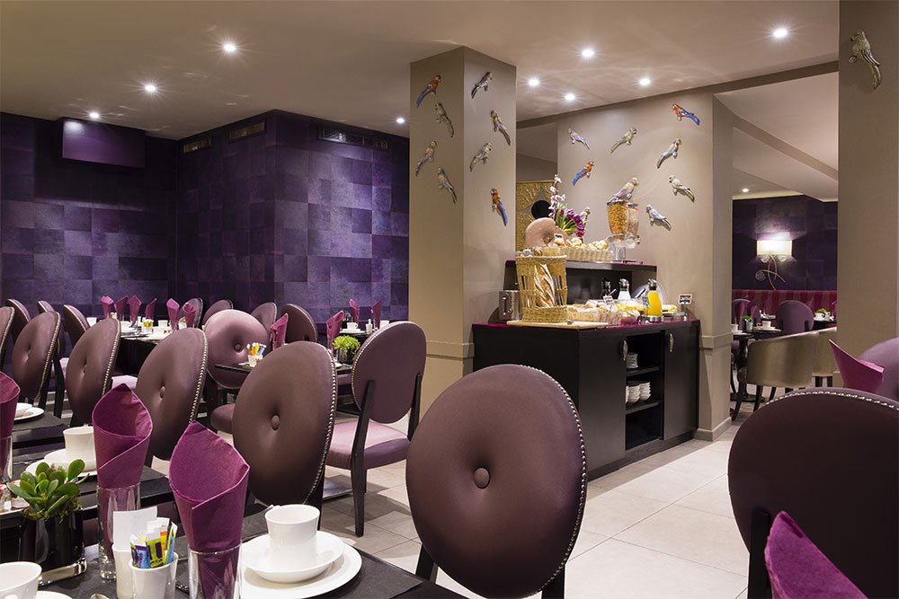
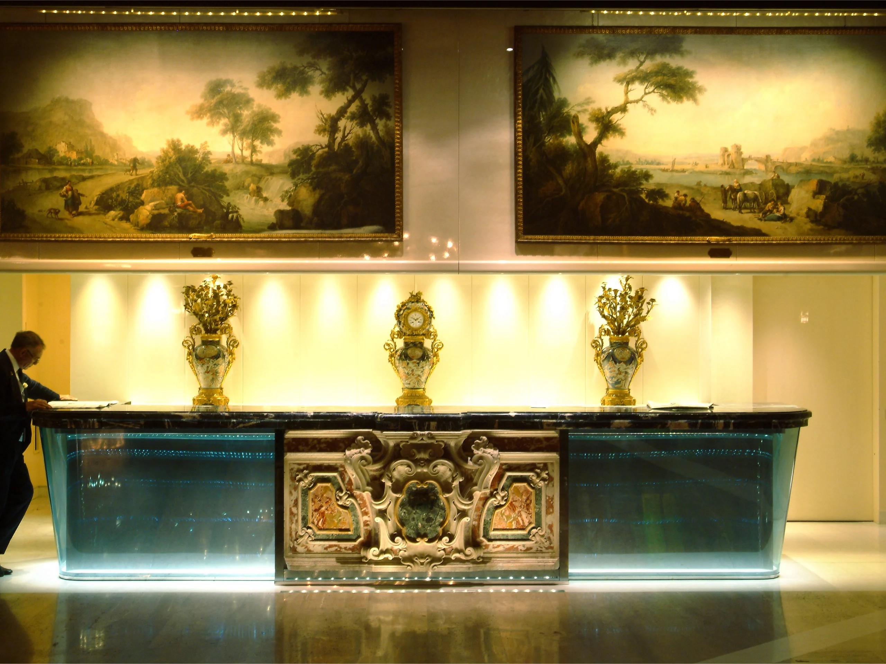
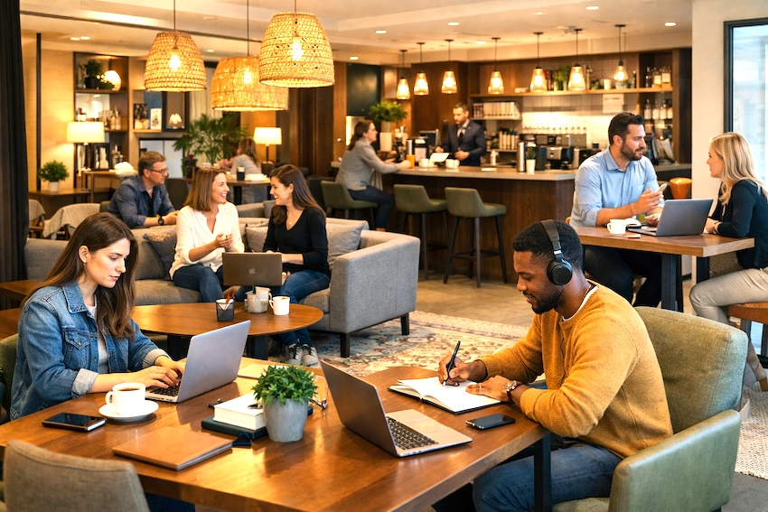
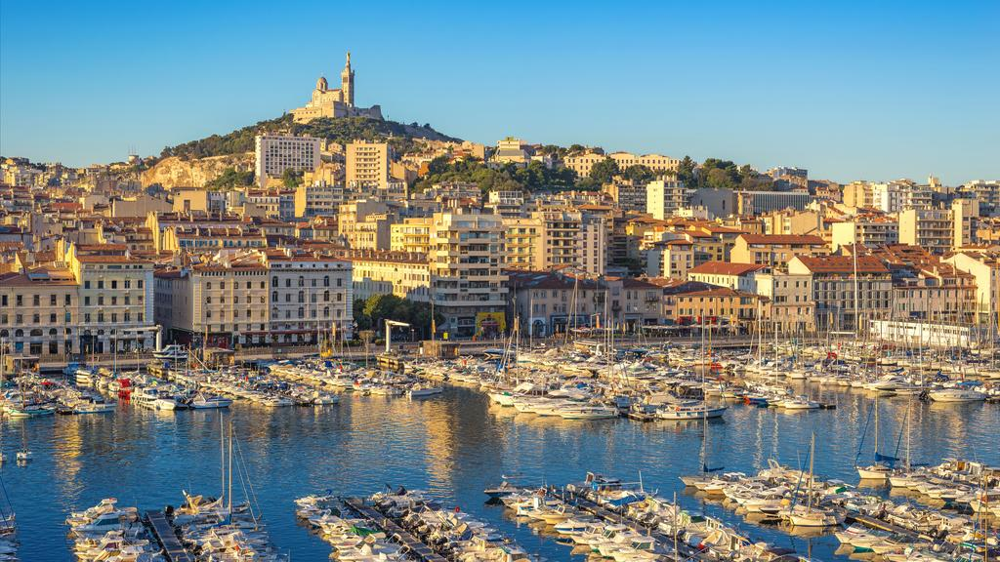

Marseille — Vieux-Port
Les jours bleus,
les nuits douces.
Une maison de charme au cœur de Marseille.
Le soleil, la mer,
et le plaisir de prendre son temps.
VOTRE PROCHAINE PARENTHÈSE
Quelques jours au soleil.
Chambres & suites dès 110 € / nuit
 Marseille, tout simplement.
Marseille, tout simplement.
L’ESPRIT CABANON
Une adresse à part.
Une ville à vivre.
Né de la passion d’une famille marseillaise, Le Cabanon Bleu vous accueille dans une demeure provençale entièrement rénovée. Le charme de l’ancien, le confort d’aujourd’hui et cette douceur qui n’appartient qu’au Sud.
À quelques minutes à pied du Vieux-Port, partez explorer les ruelles du Panier, les plages et les calanques. Puis retrouvez le calme de votre maison marseillaise.
Les petits plaisirs du séjourVOTRE REFUGE À MARSEILLE
À chacun ses jours bleus.
Des espaces lumineux et apaisants, décorés dans un style méditerranéen contemporain.
Chambre Confort
Lit double, 15 m², climatisation, Wi-Fi gratuit, vue sur le jardin.
À partir de 110 € / nuit
Explorer la chambreChambre Supérieure
Lit king-size, 20 m², balcon privé, vue sur les toits de Marseille.
À partir de 145 € / nuit
Explorer la chambreSuite Méditerranée
Espace salon, 30 m², terrasse avec vue mer, baignoire.
À partir de 210 € / nuit
Explorer la chambrePRENDRE LE TEMPS
Les plaisirs simples du Sud.

Petit-déjeuner provençal
Produits frais, viennoiseries, confitures maison, servis en terrasse ou en chambre.

Piscine & Jardin
Un espace extérieur arboré avec piscine chauffée, idéal pour se détendre après une journée de visite.

Conciergerie
Réservation de restaurants, excursions en bateau, visites guidées des Calanques.

Wi-Fi & Espace de travail
Connexion fibre gratuite dans tout l'établissement, coin bureau disponible.
LA VILLE, À VOTRE RYTHME
Dehors, Marseille.
Dedans, la douceur.
Un café sur le port, une promenade dans le Panier, un horizon qui s’ouvre sur la mer. Laissez la ville vous donner des envies.
-
01
Flâner au Vieux-Port
Les bateaux, les terrasses et la lumière du matin.
-
02
Se perdre dans le Panier
Des ruelles colorées, des ateliers et des petites places.
-
03
Prendre le large
Parlez à notre conciergerie de vos envies de mer et de calanques.

Quelle chambre choisir ?
La Confort offre un cocon de 15 m² avec vue sur le jardin. La Supérieure dispose de 20 m² et d’un balcon privé. La Suite Méditerranée propose 30 m², un espace salon et une terrasse avec vue mer.
Quels services découvrir sur place ?
Petit-déjeuner provençal, piscine chauffée, jardin, conciergerie et Wi-Fi fibre : découvrez les plaisirs du séjour dans notre section services.
Comment préparer mon séjour ?
Choisissez vos dates et votre chambre dans le formulaire. Ce site est une démonstration : aucune réservation ni aucun paiement ne sont effectués.
LA MÉDITERRANÉE VOUS ATTEND
Et si vous restiez
encore un peu ?
Réservez directement sur notre site pour bénéficier des meilleurs tarifs.
Réserver maintenant